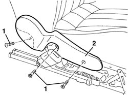

7045A44 SEAT INTERIOR GUARD - R R
- Path
- Procedures > 70 FITTINGS > 7045 FRONT SEATS > 7045A FRONT SEAT ASSEMBLY > 7045A44 SEAT INTERIOR GUARD - R R
- Kind
- repair procedure (removal / refitting; the operation number is the code)
- Applies to
- all engines; all production periods
- Interactive page
- https://sloeber94.github.io/elrnDB-aGt/en/#/125001908
Applies to: all engines; all production periods
 Removing
Removing
 Refitting
RefittingOp. 7045A10 L/H OR R/H FRONT SEAT (ONE) - R+R
1. Undo the bolts securing the shield.
2. Remove the shield.

Applies to: all engines; all production periods
Refitting
RemovingCheck that the guard is undamaged.
Fit the shield and tighten the bolts.
Topics linked from this page (1)
Topics that link to this page (14)
- S65 SEATS CREAKING
- 7045A62 JOINTS OF DRIVER`S SIDE FRONT SEAT LIFT DEVICE - R R WITH SEAT DISCONNECTED
- 7045A70 FRONT SEAT SUPPORT/GUIDE - DRIVER`S SIDE WITH LIFT DEVICE - R R WITH SEAT REMOVED
- 7045A72 FRONT SEAT MOUNT/GUIDE - PASSENGER`S SIDE R R WITH SEAT REMOVED
- 7045A73 FRONT SEAT MOUNT/GUIDE - PASSENGER`S SIDE R R
- 7045A85 R R HANDLE FOR FRONT SEAT FORE AND AFT ADJUSTMENT
- 7045A86 R R HANDLE FOR FRONT SEAT FORE AND AFT ADJUSTMENT
- 7045A87 R R HANDLE FOR FRONT SEAT FORE AND AFT ADJUSTMENT
- 7045A90 R R HANDLE FOR FRONT SEAT FORE AND AFT ADJUSTMENT
- 7045A91 R R HANDLE FOR FRONT SEAT FORE AND AFT ADJUSTMENT
- 7045A92 R R HANDLE FOR FRONT SEAT FORE AND AFT ADJUSTMENT
- 7045A93 R R HANDLE FOR FRONT SEAT FORE AND AFT ADJUSTMENT
- 7045L30 BACKREST FOLDING CONTROL CABLE/ROD - R.R.
- 7045M22 L/H OR R/H FRONT SEAT CUSHION HEAT PAD - R+R FOLLOWING ELECTRICAL WIRING CHECK